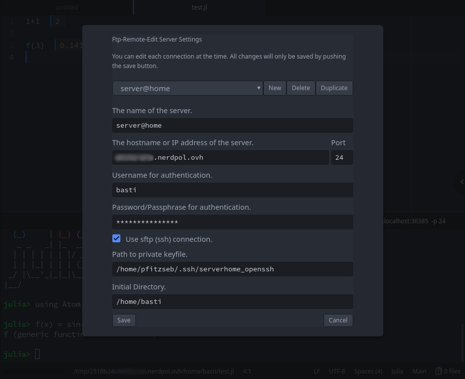
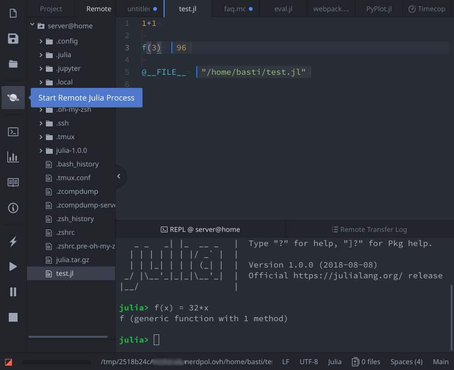

FAQ
I am having issues, where do I leave a bug report?
Please leave bug reports either at the discussion board or at the Juno.jl Github repository.
The installation of some Atom packages fails. What can I do?
It is possible that your Antivirus Software prevents certain files to be downloaded or executed that are necessary for Juno to function. Consider disabling antivirus software's real time monitoring for the duration of the installation. For certain scanners (Avast and McAffee) it might also be necessary to exclude
C:\Users\you\.atom\packages\julia-client\node_modules\node-pty-prebuilt\build\Release\winpty-agent.exefrom the real time monitoring after installation. This is an upstream issue which should hopefully be resolved soon.
Juno doesn't work properly after an Atom update. What do I do?
Check whether you have a little red bug symbol in the status bar (lower right):

If so, click on it and then click on "Rebuild Packages":

Restart Atom and you should be good to go!
Juno doesn't work properly after some Atom packages were updated. What do I do?
There's a chance the update of julia-client failed. To get a clean re-install while preserving any setting you might have changed, try the following steps:
- Close all Atom instances.
- Start a terminal (e.g.
cmdon Windows or the Terminal App on MacOS) - Execute
apm uninstall julia-client. - Execute
apm install julia-client. - Start Juno. Evertyhing should work again.
The REPL is unbearably slow. How do I fix it?
Enable the Fallback Renderer option in the julia-client settings and restart Atom for good measure.
Some Juno package is using the wrong precompile cache, what do I do?
This problem manifests itself in errors like:
WARNING: Method definition
WARNING: Module Juno with uuid 738353145462472 is missing from the cache.
ERROR: LoadError: Declaring precompile(false) is not allowed in files that are being precompiled.
ERROR: LoadError: Failed to precompile Atom to C:\Users...One way this can occur is from updating Julia versions. However, this has a very easy fix. Go into the Julia REPL (not the Juno console in Atom, but the actual Julia terminal window) and type in the command:
using AtomThat will force Julia to re-compile all of the cache files and should fix the problem.
I am having a problem running Juno with an older version of Julia, why?
Juno is under rapid development, so it's expected that previous versions may not be compatible with the Atom packages overtime. Julia will automatically use older versions on the Julia-side packages, but Atom will always give you the most up-to-date packages it knows about, which causes this issue. The easy way to solve this is to always use the current Julia release. Otherwise, resort to the Developer Installation Instructions for the Atom packages and use git to checkout an older version. This requires some git know-how, so it's only recommended if the older version of Julia is truly necessary.
How do I use Juno with the Julia Nightly version?
If you want to use Juno with the nightly version use caution: this package is under rapid development so do so at your own risk. That being said, the Julia nightly should work using the Developer Installation Instructions. Note that this will require you to be on master for the Julia and Atom packages, so things will be changing likely before documentation changes.
How do I execute code on Juno startup?
Much like Julia has its ~/.julia/config/startup.jl file for executing code on startup, Juno will execute code contained in ~/.julia/config/juno_startup.jl after Julia has been booted and a connection with the editor is established. This allows running code on startup that queries the frontend, e.g. Juno.syntaxcolors.
Advanced topics
Connecting to a Julia session on a remote machine
Juno can be used for editing and executing code on a remote machine (which might be very useful for computationally expensive tasks or when you want to use hardware not available locally, e.g. GPUs).
Prerequisites
The remote machine must have Julia installed and you need to be able to open a ssh connection to it. On your local machine you need a working Juno installation as well as ftp-remote-edit for editing remote files.
Setup
Add a new server in ftp-remote-edit's server browser with the Ftp Remote Edit: Edit Servers command:

Select that server in the "Remote" tree view and click the planet icon in the toolbar to start a Julia session on the selected remote machine. If you want to start a remote session by default then you can change the Boot Mode to Remote in the julia-client settings.

If you have tmux installed on the server then you can also use a persistent session, which you can connect to and disconnect from at will without losing progress. To use this feature enable the Use persistent tmux session option in the julia-client settings. Note that using tmux changes the behavior of the console, affecting scrolling and copy/paste. See the manual page for more information.
If you have a more elaborate setup on the remote server, you can use the command to launch julia option for a custom script

where julia.sh can be something like
# do setup
/usr/bin/julia "$@"The important part is to use "$@" in order to pass the arguments to Julia required to start Juno and of course to guarantee that at the end of the script a Julia session will be opened. For example, to launch Julia in a singularity container on the remote, something like the following can be used
export JULIA_NUM_THREADS="$(( `nproc` / 2 ))"
singularity exec /path/to/singularity/image/julia.sif /usr/local/julia/bin/julia -O 3 "$@"Connecting to a Julia session in a (local) Docker container
Use case: local installation of Juno with a local Docker container
- Launch Atom/Juno on your local machine
- Spin up your docker container with network_mode:host, ie.
docker run -it --network=host [container_name] julia- In Atom/Juno, bring up The Command Palette and search for
Julia Client: Connect External Process - Juno will respond with a Julia command, e.g.
using Juno; Juno.connect([Atom port]), where [Atom port] is the port Atom is listening on for the Julia session to connect. - In the Julia session, replace [Atom port] in the following command with the port specified by Atom & enter the following command to connect your Julia session to Atom
For Mac:
using Juno; Juno.connect("host.docker.internal", [Atom port])For Linux (untested):
using Juno; Juno.connect("docker0", [Atom port])